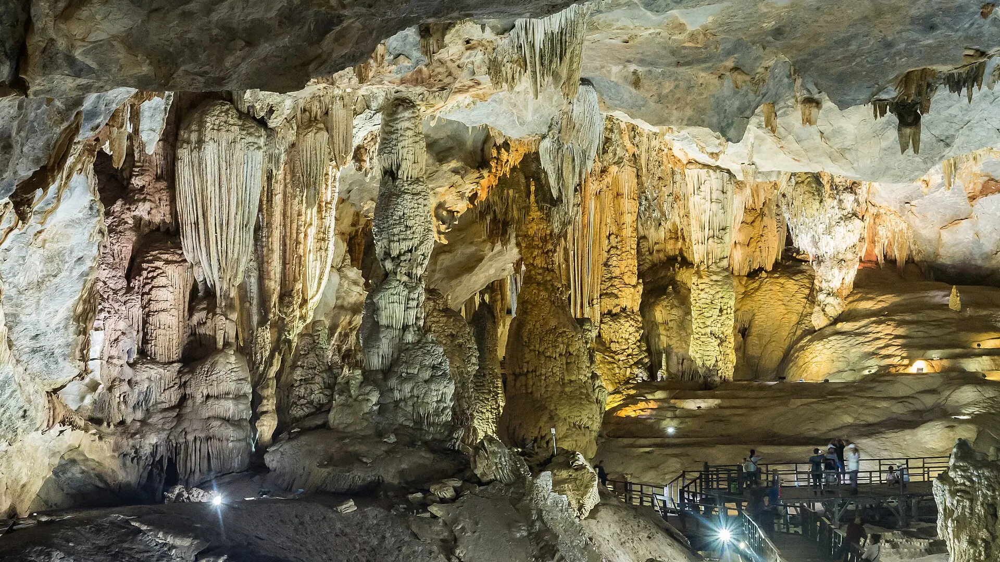

꽝빈 반보뜩
조린 민물새우를 넣은 반투명 만두, 고추 느억맘에 찍어요.

퐁냐 – 께방 국립공원에는 아시아에서 가장 오래된 카르스트 동굴 지대가 있으며, 세계 최대 동굴 선둥도 이곳에 있습니다. 웅장한 종유석의 티엔두엉 동굴과 지하 강이 흐르는 퐁냐 동굴은 놓치지 마세요.
날씨 불러오는 중...
달을 눌러 여행하기 좋은 때인지 확인하세요
In the dry season, expeditions to Son Doong, Hang En and Tu Lan run, and Phong Nha and Paradise caves are fully open.
Son Doong and Hang En tours must be booked months ahead with a fitness check; many pause from September for the flood season.
Heavy rain, possible floods and typhoons; Hoi An and Hue may flood.
Watch forecasts and book flexible tickets/rooms; island boats may be suspended.
음력 축제는 해마다 날짜가 바뀝니다 – 출발 전에 공식 일정을 확인하세요.
조린 민물새우를 넣은 반투명 만두, 고추 느억맘에 찍어요.
새우와 돼지고기를 넣은 바삭한 부침개, 산나물에 싸 먹어요.
Vietnamese & Western food, smoothies, traveller hangout
Thị trấn Phong Nha, Bố Trạch 업데이트 2026.09 신고Grilled chicken, Son river fish
Bờ sông Son, thị trấn Phong Nha 업데이트 2026.09 신고Tapioca shrimp dumplings, chao canh noodle soup
Chợ Phong Nha 업데이트 2026.09 신고DIY grilled farm chicken in a garden, cold beer
Thôn Cù Lạc, Phong Nha 업데이트 2026.09 신고Snakehead fish noodle soup for breakfast
Chợ Phong Nha 업데이트 2026.09 신고Grilled river fish from the Son
Bờ sông Son, Phong Nha 업데이트 2026.09 신고Rice-flour noodle soup, tapioca dumplings
TP Đồng Hới 업데이트 2026.09 신고Farm meals: chicken and garden greens
Thung lũng Bồng Lai 업데이트 2026.09 신고1인 기준 참고 가격. 주소를 누르면 Google 지도에서 영업시간과 최신 리뷰를 볼 수 있어요.
손강을 따라 지하 강으로 들어가요.
집라인, 머드 목욕, 동굴 속 수영.
세계 세 번째로 큰 동굴 안에서 캠핑.
퐁냐 주변 푸른 계곡 탐방.
이 여행지와 달에 맞춘 추천 목록입니다 (일정 섹션에서 출발일을 고르면 달이 바뀝니다). 챙긴 물건에 체크해 두세요.
가격, 운영 시간이 바뀌었거나 문을 닫은 가게를 발견하셨나요? 신고
300k–900k / 박
Near the Phong Nha Cave boats and eateries.
300k–800k / 박
Farmstays among rice fields and karsts.
1.2M–3M / 박
Close to the Dark Cave zipline.
Fly or take the train to Dong Hoi (VDH airport / Dong Hoi Station), then ~1 h (45 km) by road to Phong Nha town. ~3.5–4 h by road from Hue.
| 하노이에서 |
|
|---|---|
| 다낭에서 |
|
| 호찌민시에서 |
|
예상 이동 시간, 1인 편도 절약형 요금 – 참고용입니다. 굵게 표시된 것이 추천 방법이에요.
2인 1박 기준 참고 객실 요금이며 뗏(설), 공휴일, 주말에는 더 비쌉니다. Việt Travel은 예약 사이트로부터 수수료를 받지 않습니다.
Việt Travel · 꽝찌 (구 꽝빈) · 여행 적기: 3월 – 8월
퐁냐에 도착해 배를 타고 선강을 따라 퐁냐 동굴과 띠엔선 동굴로 들어갑니다.
자전거로 봉라이 계곡을 달립니다.
퐁냐 닭구이를 먹고 강변 홈스테이에서 묵습니다.
가볍게 밤 산책 후 숙소에서 휴식
웅장한 종유석이 가득한 천국 동굴을 탐험합니다.
집라인, 어둠 동굴 진흙 목욕, 짜이강 수영.
꽝빈 반봇록과 국수죽을 맛봅니다.
가볍게 밤 산책 후 숙소에서 휴식
일찍 출발한다면 반미나 찹쌀밥을 포장하세요
누억목 개울 – 정글 속 수영과 카약.
홈스테이 바비큐와 동굴 탐험가들의 이야기.
가볍게 밤 산책 후 숙소에서 휴식
투어 종료: 체크아웃 후 특산물을 사서 귀가합니다.
숙소에서 아침 식사 (객실 요금에 포함되는 경우가 많음)
녓레 해변에서 수영하고 꽝푸 모래 언덕을 방문합니다.
야시장이나 먹자골목을 거닐며 저녁 식사
동허이 야시장에서 해산물을 먹습니다.
가볍게 밤 산책 후 숙소에서 휴식
투어 종료: 체크아웃 후 특산물을 사서 귀가합니다.
숙소 근처 현지인이 많은 식당에서 아침 식사
명소 근처에서 간단한 덮밥 점심
숙소 근처에서 저녁 – 현지인이 많은 곳을 고르세요
녓레 강변 광장을 산책합니다.
투어 종료: 체크아웃 후 특산물을 사서 귀가합니다.
상세 내역: 예산
상세 내역: 편안함
상세 내역: 예산
상세 내역: 편안함
상세 내역: 예산
상세 내역: 편안함
퐁냐 – 께방까지의 항공/교통은 제외. 참고 가격이며 계절에 따라 달라집니다.
여러 곳을 여행하시나요? 퐁냐 – 께방을(를) 다른 여행지와 묶어 보세요.
경험 공유
독자 사진
아직 사진이 없습니다 – 퐁냐 – 께방에서의 순간을 처음으로 공유해 주세요!
내 사진 공유하기